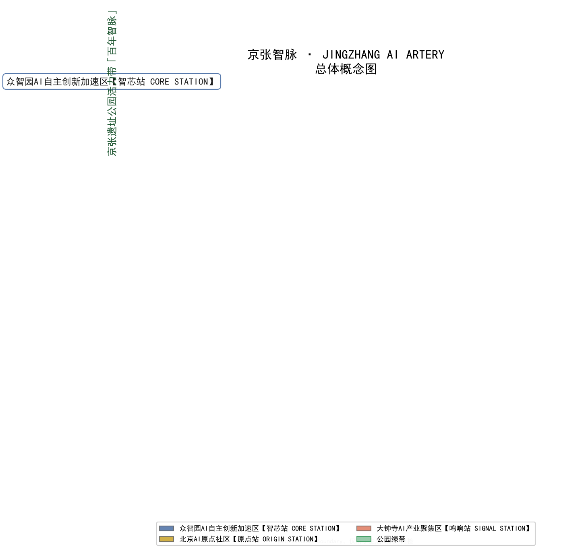

JINGZHANG AI ARTERY: Overall Urban Design for the Centennial Jing-Zhang AI Innovation Belt
Under the overall concept 'JINGZHANG AI ARTERY' (京张智脉), this proposal translates the centennial Jing-Zhang railway heritage into a globally oriented AI-native innovation artery (design vision, pending construction practice and evaluation): one artery (the Jingzhang heritage park belt), three cores (Zhongzhiyuan, Beijing AI Origin Community, Dazhongsi) and two wings (ZGC service wing, Xiaoyuehe scenario wing), with a five-station naming narrative, 12 AI scenario cards, 3 pilgrimage landmarks and an annual global AI event system — a recomputable, reviewable conceptual urban design to be recalculated once official boundaries arrive.
JINGZHANG AI ARTERY: Overall Urban Design for the Centennial Jing-Zhang AI Innovation Belt
Design Basis and Source List
This proposal takes the Pre-qualification Announcement for the International Solicitation of Urban Design Proposals for the Centennial Jing-Zhang AI Innovation Belt, issued by the Haidian Branch of the Beijing Municipal Commission of Planning and Natural Resources, as its first authority Source. The agent-facing open-call taskbook governs agent tasks and boundaries Source. The structured site package under brief/site-package/, the registry in data/source_registry.json and the fact-pack navigation layer in data/processed/agent_fact_pack.md are the machine-readable basis Source. Source usability follows the registry tiers: the announcement and the agent taskbook are formal-ready, professional-standard snapshots serve as formal evidence, and provisional geometry is used only for generation, display and self-check Source.
All spatial data in this proposal derive from the above materials. The submitted boundary and the three key areas use the maintainer-registered provisional_boundaries.geojson, explicitly marked geometry_role="provisional_constraint" and official_boundary=false Spatial data Source. These polygons may only support generation, visualization and self-check; they must not be treated as an official redline, an approval basis or a precise-area basis. Once the official taskbook attachments and pre-qualification package are released, the boundary, key areas, land use, buildings, roads, green space, public space, phasing and all metrics must be recalculated. Existing-condition diagnosis and data gaps are organized under the existing_conditions_diagnosis depth item Depth.

The proposal follows four disciplines. First, every spatial, operational and branding statement is phrased as a conceptual suggestion, a reference scheme, or material for professional teams to deepen — never as an approved regulatory plan, FAR, height, retain-renovate-demolish, road alignment, municipal capacity, investment or event commitment Standard. Second, authoritative metrics come only from recomputable geometry or registered sources; missing official controls stay status=unknown with the recalculation path in assumptions.json. Third, the prose is written for human readers while sources.json, metrics.json and the three matrices carry the machine audit layer. Fourth, all figures and media are explanatory layers, never fabricated evidence. This section establishes the traceable evidence start for every later chapter.
Three-Level Scope Framework
The proposal follows the three official scope levels Standard. The coordinated research area covers about 43.6 km² (north to the North 5th Ring Road, east to the G6 Jingzang Expressway, south to Xizhimen Outer Street, west to Wanquanhe Road) and answers the strategic questions of the AI innovation ecosystem and the future city form Metric. The overall design area covers about 11.4 km² — the urban and industrial districts within 1–2 km of the Jingzhang heritage park — and answers urban-renewal framework, industrial layout, transport and municipal support, and city-character control Metric Spatial data. The key detailed-design area covers about 368.4 ha, composed from north to south of the Zhongzhiyuan AI Acceleration Area (about 192.1 ha), the Beijing AI Origin Community (about 104.3 ha) and the Dazhongsi AI Industry Cluster (about 72.0 ha), reaching the design depth of a comprehensive implementation plan Metric Spatial data.
The logic of the three levels is "strategy — spatial plan — detailed verification": the research level turns the innovation chain of "full-stack autonomy, open-source origin, scenario empowerment, international communication" into a spatial structure; the overall design level turns that structure into recomputable land-use partitions, renewal projects and facility networks; the key-area level verifies renewal mechanisms, public space and AI scenarios in three districts Depth. The depth of each level is locked by the corresponding design-depth items Depth.

The provisional boundary's applicability must be stated clearly: the temporary polygons were inferred from the announcement's textual bounds, approximate areas and road names, and serve only generation, display and self-check for this open call. The boundary in geometry/site_boundary.geojson and the polygons in geometry/key_areas.geojson must not be used as an official redline, an approval basis or a precise-area basis. Assumption A-BOUNDARY-001 in assumptions.json lists everything to recalculate after official polygons replace them: boundary areas, key-area areas, all land-use partitions, green and public-space ratios, building footprints, phasing areas and every geometry-derived metric. This organizer-side data gap does not block content scoring, but the proposal deliberately marks affected conclusions as pending official data instead of presenting pseudo-precise values.
Coordinated Research Area: Industry and Future City Research
Overall Concept and Naming System
The proposal's overall concept and primary name is "JINGZHANG AI ARTERY" (京张智脉). The naming works on three levels: "Jing-Zhang" inherits the place-name asset of the centennial railway and the spirit of independent innovation; "artery" turns the "railway artery" into an "intelligence artery" while pointing to the three official positionings — the Centennial Jing-Zhang Cultural Belt (heritage artery), the Urban AI Life Experience Belt (daily pulse) and the AI Integrated Innovation Belt (industry artery) Source; the English name is short, memorable and aligned with the global-communication goal of an "AI highland and pilgrimage site". The core narrative sentence: "A hundred years ago, the first trunk railway independently designed by the Chinese set out from here; a hundred years later, a globally oriented AI-native innovation artery grows here (design vision, pending construction practice and evaluation)."
The naming system is organized as "one belt, one artery, three cores, two wings, five stations": the belt is the Centennial Jing-Zhang AI Innovation Belt; the artery is the "AI Artery" main greenway of the Jingzhang heritage park; the three cores are the Zhongzhiyuan AI Acceleration Area [CORE STATION], the Beijing AI Origin Community [ORIGIN STATION] and the Dazhongsi AI Industry Cluster [SIGNAL STATION]; the two wings are the ZGC Science & Technology Service Wing [EXCHANGE WING] and the Xiaoyuehe Scenario Empowerment Wing [SCENARIO WING]. The five "stations" borrow the railway-station imagery to organize the city narrative, each with an English tagline (CORE STATION — "Build the full stack"; ORIGIN STATION — "Where AI began"; SIGNAL STATION — "Where ideas launch") for wayfinding, events and international communication. The suggested logo direction abstracts the "人"-shaped switchback of the Jingzhang Railway into two converging diagonals whose crossing expands into a neural-pulse node, a dual symbol of "people" and "AI signal"; primary colors take railway brown (#7A4A2B) and AI blue (#35618F) with Jingzhang green (#3C9A5F) as accent. Typefaces and trademark use require separate clearance. The identity serves the three positionings and five functions without copying any existing city, park or corporate mark Standard.
Global AI Ecosystem Cases and Transferable Mechanisms
Six global cases were selected with explicit transfer mechanisms Metric. First, the Sand Hill Road–Stanford circle in Silicon Valley validates the "one-kilometre capital radius", transferred into the ZGC service wing's "Capital 1-km Circle" design hypothesis (no verifiable comparison basis or time boundary yet; further empirical study needed) with conceptual investment-service nodes between Zhongzhiyuan and the Origin Community. Second, Kendall Square around MIT validates the brownfield-to-innovation-district path, transferred into the Origin Community's "campus transfer street" organization. Third, King's Cross in London validates the public-space-first strategy of railway-station regeneration, transferred into the "public first, development later" implementation order of the Jingzhang heritage park. Fourth, Shibuya in Tokyo validates the combination of digital-native business and night economy, transferred into Dazhongsi's AI-native consumption and launch economy. Fifth, the Yuehai Street cluster in Shenzhen validates the iteration speed of dense industry agglomeration, transferred into Zhongzhiyuan's compact full-stack layout. Sixth, the West Bund in Shanghai's Xuhui validates the attraction of riverside public space for AI firms and talent, transferred into the Qinghe and Xiaoyuehe riverside innovation fronts. All cases are publicly verifiable general experience; no enterprise list, investment figure or policy arrangement is fabricated, and every mechanism is a conceptual suggestion Source.
Three-Areas-Two-Wings Synergy Loop and Future City Form
The three positionings and five functions are placed through the "three areas, two wings" synergy loop Source: Zhongzhiyuan carries the full-stack autonomous innovation system and global AI-governance voice; the Origin Community carries the world-class AI innovation ecosystem; Dazhongsi carries AI-native new business; the ZGC service wing carries global factor allocation and capital empowerment; the Xiaoyuehe scenario wing carries AI+ scenario trials and the intelligent vibrant city. The suggested loop is "open-source origin (Origin) → full-stack acceleration (Zhongzhiyuan) → scenario validation (Xiaoyuehe) → launch consumption (Dazhongsi) → capital re-allocation (ZGC) → back to open-source origin", making the five plates a sustainable cycle rather than a one-off investment list. The future-city research covers AI-native work, living, learning and socializing: workplaces evolve toward compute-proximate, flexible and night-collaborative patterns; housing toward talent apartments plus a 15-minute living circle; learning toward a continuous campus-district-park learning belt; social spaces toward reservable public laboratories. All these statements are conceptual suggestions that land in the land-use, public-space and scenario chapters below.
Regional Synergy and the Beijing-Tianjin-Hebei Innovation Chain
This proposal positions the belt within Beijing and the wider Beijing-Tianjin-Hebei innovation landscape, proposing a "one core, multiple nodes, gradient synergy" division of labor Source. As the core carrier of the global AI highland and pilgrimage site, the Jing-Zhang AI Innovation Belt coordinates with the Beiwei Community (absorbing frontier-research spillover and premium talent living), the Future Science City in Changping (hard-tech synergy in energy and advanced manufacturing), Huairou Science City (national major science infrastructure and large-scale facilities supporting basic research and the compute base), the Beijing Economic-Technological Development Area / Yizhuang (scaled validation of smart manufacturing and autonomous driving), plus Tianjin Binhai, Xiong'an and Zhangjiakou (compute, data and green-energy hinterlands), forming a "research origination — pilot conversion — scaled validation — green compute" gradient chain. Spatial synergy is expressed through three relations: borrowing hard-tech and basic research strength from the Future Science City and Huairou to the north, linking scaled scenarios of Yizhuang and Xiong'an to the south, and relying on renewable-energy and compute synergy toward Zhangjiakou in the west. This positioning grounds the pilgrimage site's scarcity in three irreplaceable functions — original origination, global open source and launch consumption — avoiding homogeneous competition with neighboring parks. All synergy relations are conceptual suggestions; specific industrial division and policy alignment require regional-planning and industry-authority confirmation.
Integrated Planning and Space-Industry Integration
On planning innovation, the proposal offers three deepenable ideas Depth. First, an "integrated plan" merges industrial, spatial and operational planning, replacing the old "plan first, attract later" with a "planning — scenario — operation" loop in which the 12 scenario cards become the demand input for land use and renewal projects Metric. Second, "space-industry integration" breaks the functional wall between campus and city, putting research, testing, launch and consumption into one public-space sequence to form a "15-minute AI life circle". Third, echoing territorial-spatial planning innovation, "reserved land + flexible phasing + recomputable metrics" absorbs the uncertainty of AI iteration instead of freezing land-use once and for all. The eight factor mechanisms are organized into a supply matrix: land through reserved parcels and renewal mining, space through public labs and shared carriers, industry through the full-stack autonomy chain, capital through the 1-km capital circle, talent through talent apartments and developer communities, compute through edge service points and distributed energy, data through compliance service points and open-source registration, and scenarios through reservable, revocable scenario cards. This matrix is answered item by item by agent.2 and agent.3 in compliance_matrix.json Metric.
Overall Design Area: Urban Renewal and Regulatory-Plan-Level Urban Design
Overall Spatial Structure and Renewal Framework
The overall spatial structure is "one artery, three cores, two wings, five bridges, networked nodes" Depth. The artery is the Jingzhang heritage park belt organized along the conceptual old Jing-Bao rail corridor, running through the overall design area from south to north Spatial data; the three cores are the three key areas; the two wings are the functional wings east and west of the park; the five bridges are five east-west "smart-bridge stitch" bands crossing the park at the conceptual positions of Dazhongsi South, North 3rd Ring Road, North 4th Ring Road, Chengfu Road and the Qinghe River, stitching industry, housing and public life across the park Spatial data. The structure diagram also expresses the three-level transmission and the provisional status, avoiding turning the temporary boundary into the composition's protagonist.
The renewal framework follows "public first, development later, reserved flexibility": Phase 1 (about 464.7 ha) starts with the three cores and the southern demonstration segment of the park, fixing slow-traffic gaps and activating station plazas and the campus transfer street; Phase 2 (about 325.6 ha) completes the wing stitching and the Zhongzhiyuan north segment; Phase 3 (about 351.0 ha) refines the whole area Metric Spatial data. Phasing boundaries are conceptual partitions, not a development-sequence commitment.
Land-Use Layout and Industrial Function Mix
The land-use layout follows the national land-use classification logic. geometry/land_use.geojson covers the submitted boundary completely with 58 partitions, without gaps or overlaps, all areas recomputed in EPSG:4548 Standard Depth Spatial data. The conceptual function mix (share of the overall design area): park green space about 23.7% Metric, road land about 10.1%, commercial about 22.0%, R&D about 23.5%, education about 3.3%, residential about 2.4%, plazas about 10.4%, plus cultural, medical, sports and reserved land. Industry space follows a "R&D — commercial — residential" gradient: mixed R&D and commercial bands hug both sides of the park, transitioning outward to education and housing, forming a pattern of "innovation density decreasing away from the park while life services densify around rail stations". All ratios come from the conceptual partition recalculation, not statutory land-use figures; without regulatory-plan and ownership data, the function mix remains a directional suggestion Depth.
Renewal Objects and Scale Control
Building footprints are expressed as 110 conceptual buildings, mapped by land-use type to AI R&D, labs, incubators, mixed use, education, talent apartments and cultural display, all inside buildable partitions Metric Spatial data. The footprint area is about 25.4 ha, and the conceptual total volume assumes an average of 4.5 storeys, explicitly labeled as a low-confidence design quantity Metric. Statutory controls — FAR, building height, building density, green-space standard and setbacks — remain status=unknown because official regulatory conditions are absent from the public site package Metric; the proposal only gives directional guidance (lower and open along the park, denser around rail stations, height-restrained along water) pending official data Depth. The retain-renovate-demolish logic likewise avoids parcel-level conclusions and offers a method framework: retain coherent heritage and campus fronts; renovate inefficient industrial carriers, rail gateways and ground-floor commerce; demolish only objects without protection value that seriously block public connectivity; build modest additions for talent housing, community services and public labs; reserve the rest as white land Depth.
Detailed Design of Key Areas
The three key areas carry three innovation logics — full-stack autonomy, open-source origin and AI-native business — and share one detailed-design framework: positioning — spatial structure — building renewal — transport & slow traffic — public space — AI scenarios — implementation risk Depth.
Zhongzhiyuan AI Acceleration Area [CORE STATION]
Positioned as a garden-style full-stack innovation district for compute, foundational software and standards governance Spatial data. The suggested structure is "one core, two fronts": the Zhongzhiyuan test-and-validation plaza as the public core (a conceptual station plaza of about 1.8 ha), the Qinghe low-carbon innovation front to the west, and the park greenway linking southward to the Origin Community Spatial data. Building renewal favors low-rise labs and R&D clusters with green roofs carrying energy and test platforms, avoiding enclosed mega-campuses. Transport relies on the North 5th Ring Road and the east line of Jingzhang Avenue for external access, with walking and low-speed shuttles inside and a conceptual alignment reserved for an autonomous-driving test track. AI scenarios include the open-source model inference & evaluation plaza, the AI safety red-team sandbox and edge-compute service kiosks, all operated under "reservable, supervised, auditable" rules. The implementation risk is that official boundaries and regulatory conditions are pending and the Qinghe blue line needs official data; no engineering feasibility conclusion is given.
Beijing AI Origin Community [ORIGIN STATION]
Positioned as the open-source origin and talent community, organized around the Qinghuayuan station heritage node Spatial data. The suggested structure is "one station, one street, one loop": the station is the conceptual cultural node at the former Qinghuayuan station site (to be deepened after official heritage data and review; no heritage control line is inferred); the street is the campus transfer street connecting campuses, parks and districts with showcase, IP and investment services Spatial data; the loop is a youth slow-traffic ring around the Origin open-source launch plaza. Building renewal retains campus fronts, renovates inefficient buildings and adds a modest number of talent apartments as a conceptual supply, not a construction commitment. AI scenarios include the open-source launch hall, the developer night school and the near-campus incubator, emphasizing community operation and contributor honor records. The risk is that heritage control lines and campus ownership boundaries require official confirmation; everything here is a reference scheme for professional deepening.
Dazhongsi AI Industry Cluster [SIGNAL STATION]
Positioned as the AI-native business and international-exchange district Spatial data. The suggested structure is "one axis, four quadrants": the Dazhongsi station integrated-access axis organizes pedestrian connectivity across the intersection's four quadrants, linking north to the conceptual Dazhongsi station TOD axis Spatial data. Building renewal opens commercial fronts and makes ground floors AI-native experience spaces; the AI launch plaza is suggested as a city stage for model and AI-agent product launches (conceptual suggestion). AI scenarios include the AI-agent and smart-terminal experience street, multilingual AI interpretation, AI+legal & policy consultation kiosks and night-time smart consumption, all with content compliance, human review and an accessibility floor Standard. The risk is that station-area ownership and traffic organization need re-verification; this proposal does not replace rail or municipal engineering design.

The depth of the three key-area designs is supported by the three_key_area_detailed_design item and the key-area layers. Because the three polygons are provisional, the building scale, development intensity and specific projects in this section are directional only; each area must be recalculated once official polygons and regulatory controls arrive.
AI Innovation Ecosystem, Personas, and AI+ Scenarios
User Personas
Five persona groups are defined and mapped to scenarios, spaces and operations Metric. First, open-source developers (age 18–35, night-active) need release, collaboration, testing and community reputation; spaces respond with the Origin launch hall, the Renzi honor wall and night collaboration rooms. Second, AI founders and startups need low-cost offices, compute access and product proving grounds; spaces respond with the Zhongzhiyuan test plaza, shared R&D clusters and ZGC-wing investment nodes. Third, university students and faculty need technology transfer, cross-campus collaboration and daily slow traffic; spaces respond with the campus transfer street, learning belts and the youth loop. Fourth, surrounding residents (including the elderly and children) need commuting, leisure, community services and low-disturbance renewal; spaces respond with stitch plazas, embedded community services and graded night lighting. Fifth, international visitors and investors need showcase, business, hospitality and route guidance; spaces respond with the Dazhongsi international roadshow lounge, multilingual nodes and the Jingzhang Developer Passport route. All personas are generic design descriptions; no personal data is collected or used.
Twelve AI Scenario Cards
Scenario cards are organized into "test-and-validation" and "experience & empowerment" groups, each noting its space carrier, target users, data boundary and human-review mechanism Metric. Four test-and-validation cards form the belt's "city-scale proving ground" Metric:
| ID | Scenario card | Space carrier | Data & privacy boundary | Human review |
|---|---|---|---|---|
| SC-01 | Low-speed autonomous shuttle test track (test) | Zhongzhiyuan–Origin park greenway concept alignment | Public road and authorized test-field data only | Transport & safety authorities approve segment by segment; human on board |
| SC-02 | Embodied-AI robot delivery corridor (test) | Xiaoyuehe scenario wing | No pedestrian identity data; low speed, revocable | Operator plus public-space manager dual review |
| SC-03 | Open-source model inference & evaluation plaza (test) | Zhongzhiyuan test plaza | Evaluation data openly registered; model licenses explicit | Community plus third-party cross-validation |
| SC-04 | AI safety red-team sandbox (test) | Zhongzhiyuan standards-governance node | Isolated, anonymized datasets; pre-set destruction rules | Safety & ethics committee approves each exercise |
| SC-05 | Jingzhang heritage AI guide | Qinghuayuan node & park belt | Public historical sources and cleared media; AI-generated content labeled | Culture, copyright and fact-check reviewers |
| SC-06 | AI+ health service navigation | Conceptual node near a major hospital | No medical records or personal health data; public-service navigation only | Medical and legal professionals review |
| SC-07 | AI+ education personalized learning corner | Campus-interface education land | Learning data minimized; guardian consent for minors | Educators and parent representatives co-design |
| SC-08 | AI+ legal & policy consultation kiosk | Dazhongsi commercial band | Public policy index only; no substitute for legal advice | Legal professionals audit the knowledge base |
| SC-09 | Multilingual AI interpretation & reception | Dazhongsi international node | Voice processed locally, not retained | Bilingual human review for key matters |
| SC-10 | Accessible AI travel assistant | Park belt & stitch plazas | No identity or trajectory data; multi-channel output | Accessibility organizations test and accept |
| SC-11 | Developer night school & AI literacy courses | Origin Community | Open-registered course content; minimal signup data | Course committee reviews content |
| SC-12 | Public-safety & event-operation review sandbox (test) | Civic-agent governance node | Risk-tip lists only; never replaces human decisions | Safety, operations and public-participation review |
The scenario-space-operation mapping is located by the 12 scenario cards and their matching concept nodes (see the space-carrier column in the table above) Metric.
To strengthen transferability, each scenario should carry, at the deepening stage, a governance-and-acceptance baseline: (1) responsible owner — a suggested lead (R&D institute / operating enterprise / public authority) and collaborators for test, experience and public-service scenarios, avoiding "everyone is responsible, no one is accountable"; (2) data lifecycle — per-scenario collection scope, storage location, retention period, de-identification method and destruction condition, with test data and public-service data kept in separate ledgers; (3) failure degradation and human takeover — any automated decision falls back to a human or a static guide when confidence is low, the environment is abnormal, or the public objects, with a pre-set human-takeover entry; (4) stop and revoke conditions — test scenarios define pause/exit rules when safety, ethics or operation under-performs, and experience scenarios define takedown rules for content or compliance issues; (5) quantified acceptance — each test scenario gets measurable KPIs (shuttle punctuality, delivery incident rate, evaluation reproducibility, red-team coverage) and each experience scenario gets service-availability and satisfaction metrics. This baseline is a template for professional and operations teams, not a claim that any scenario is live or compliant. Every scenario obeys data minimization, open sources, explainability and human review; no scenario may presuppose privacy violation, excessive surveillance or premature deployment Source. Generative-content statements stay within the applicable boundaries of the Interim Measures for Generative AI Services Standard, and traditional human-service channels remain a floor for elderly and less-abled users Standard.
Land Use, Building Scale, and Retain-Renovate-Demolish Strategy
The land-use partition method is reproducible: starting from the submitted boundary as the universe, the script cuts, in EPSG:4548, the stitch plaza bands, the park green band, the concept road band, the three key areas, the east and west wings, and the dedicated cultural / medical / riverside partitions, with reserved white land closing the partition — complete coverage, no gaps, no overlaps Depth Spatial data. Adjacent partitions share identical vertex sets; all areas are recomputed in EPSG:4548 and match metrics.json, verified by the topology checks of scripts/spatial_review.py.
Building scale expresses only conceptual design quantities: 110 conceptual buildings, about 25.4 ha of footprints, and a conceptual total volume of about 1.14 million m² under an average 4.5-storey assumption Metric Metric. These figures are low-confidence design quantities for discussion, not statutory construction scale; FAR, height and density controls remain status=unknown pending official regulatory conditions Metric. Building types follow land use: R&D partitions host AI R&D and labs; the Origin Community hosts incubators and cultural display; residential partitions host talent apartments; commercial partitions host mixed use; the medical partition is marked as existing-retained Spatial data.
The retain-renovate-demolish strategy provides a method framework instead of parcel-level conclusions Depth: retain coherent heritage and campus fronts; renovate inefficient industrial carriers, rail gateways and ground-floor commerce; demolish only unprotected objects that seriously block public connectivity; build modest additions for talent housing, community services and public labs; reserve the rest as white land Spatial data. Every action requires ownership, heritage, structural and municipal conditions, which are declared missing through the data_gap object in geometry/constraints.geojson; no control line or ownership conclusion is fabricated.
Transport, Rail, Municipal Infrastructure, and Public Services
The transport organization centers on "rail transfer + greenway spine + five bridge stitches" Depth. The road-centerline layer uses 14 conceptual lines: the west and east lines of Jingzhang Avenue carry north-south micro-circulation, five smart-bridge stitches carry east-west connectivity, the park greenway and the Qinghe and Xiaoyuehe riverside greenways form the slow-traffic spine, and two transit-connection axes link the conceptual Dazhongsi station and Wudaokou hub nodes Spatial data. Road classes and redlines are conceptual suggestions, not engineering alignments; crossing nodes of the North 5th and North 4th Ring Roads and existing redlines must be deepened by transport professionals.
Rail and slow-traffic strategy: the conceptual Dazhongsi station TOD axis brings station flows into the AI launch plaza; the conceptual Wudaokou youth-hub axis connects the Origin Community with the campus interface; inside the park, walking, cycling and low-speed shuttles dominate, encouraging a green trip chain of "rail arrival, greenway distribution, last-mile walking" Spatial data. Parking and bicycle organization follows the direction of "total control, shared parking, cycling first"; specific standards await a transport study.
Municipal and public services cover three families Depth: first, innovation service platforms, including the conceptual test-and-validation plaza, the standards-governance display node and enterprise service windows; second, talent life services, including talent apartments, community services and 15-minute-circle facilities; third, new infrastructure, including distributed energy, edge-compute service points and data-compliance service points. The integration of traditional municipal systems with new infrastructure is a spatial-layout suggestion only; energy loads, utility capacities and flood conditions are listed as pending professional calculation, never stated as conclusions.

Blue-Green Network, Public Space, and Urban Character
The blue-green system takes the Jingzhang heritage park belt as its spine and coordinates the two conceptual riverside bands of the Qinghe and Xiaoyuehe with the stitch plaza network Depth. The green-space union is about 270.2 ha with a green ratio of about 23.7%; the public-space union is about 121.7 ha with a public-space ratio of about 10.7% — all conceptual partition values Metric Metric Metric Spatial data Spatial data. The design intent is that the green band is not only an ecological corridor but a "testable, launchable, memorable" public laboratory: the park is themed by segment — low-carbon display near the Qinghe in the north, open-source culture and youth activity in the middle, AI-native experience in the south.
The public-space component library suggests four replicable units: the AI Artery kiosk (wayfinding, translation and edge services in one pavilion), the developer bench (engraved open-source projects and contributors, with authorization), the test promenade (time-shared between low-speed tests and walking) and the honor-wall module (sustainably re-engravable contribution display). Three AI pilgrimage landmarks are proposed Metric. First, the Renzi Wall · Open-Source Honor Wall, at a concept node of the park belt, takes the "人"-shaped switchback as its formal motif and carries global AI contributor engravings with an annual ceremony (conceptual suggestion). Second, the Origin Ring · AI Time Capsule, at the concept node of the former Qinghuayuan station, seals one open-source milestone each year during the developer conference, forming a sustainable memorial asset. Third, the Signal Bell · AI Signal Tower, at the Dazhongsi concept node, "rings" at major model and AI-agent launches, with a public screen showing the open-source contribution stream. All three landmarks are conceptual suggestions whose location, form and construction require heritage, green-space, safety and public-art review; they do not constitute approved construction, and every mark, typeface, image and corporate identifier must be cleared Standard.
The urban character is "Jingzhang undertone, tech temperament, youth warmth": base colors take railway brown and Jingzhang green; building fronts open and stay low along the park while densifying around rail stations; roof forms favor green roofs and public terraces; riverside fronts control massing and preserve view corridors. Character control distinguishes official control, design suggestion and pending confirmation Standard; any concrete height or massing number is directional only, pending heritage and regulatory evidence.
Renewal Projects, Implementation Policy, and Phasing
The renewal project list presents 12 conceptual projects, mapped to the phasing layer and scenario nodes Metric Spatial data:
| ID | Project | Type | Key dependencies | Suggested phase |
|---|---|---|---|---|
| JZ-01 | Jingzhang park slow-traffic gap stitching | Public space / transport | Road redlines, under-bridge space, traffic review | Phase 1 |
| JZ-02 | Origin launch plaza & campus transfer street | Public space / renewal | Campus ownership, heritage control lines | Phase 1 |
| JZ-03 | Dazhongsi AI launch plaza & four-quadrant walkability | Public space / renewal | Station-area ownership, utilities | Phase 1 |
| JZ-04 | Renzi Wall · Open-Source Honor Wall (concept) | Culture / memorial | Heritage & public-art review, clearance | Phase 1 |
| JZ-05 | Zhongzhiyuan test plaza & standards-governance node | Industry service | Official boundary & regulatory conditions | Phase 2 |
| JZ-06 | Qinghe low-carbon innovation front | Blue-green space | River blue line, flood & ecology | Phase 2 |
| JZ-07 | East segment of the five bridge stitches (Xiaoyuehe wing) | Public space | Ownership, slow-traffic demand checks | Phase 2 |
| JZ-08 | ZGC service wing "Capital 1-km Circle" node | Industry service | Carrier conditions, operator | Phase 2 |
| JZ-09 | Robot delivery corridor & low-speed shuttle test track | Test scenario | Safety approval, operation permit | Phase 2 |
| JZ-10 | Origin Ring · AI Time Capsule (concept) | Culture / memorial | Heritage re-check, community consensus | Phase 3 |
| JZ-11 | Signal Bell · AI Signal Tower (concept) | Culture / landmark | Review procedures, clearance & safety | Phase 3 |
| JZ-12 | Area-wide slow-traffic & smart-service network | Comprehensive | Regulatory plan, utilities & ownership ready | Phase 3 |
Implementation policy follows five threads: renewal coordination ("small cuts, district-wide progress"), space supply (public space paired with industrial carriers), scenario opening (listed, reservable, revocable rules), data governance (minimization plus human review) and public participation built as a three-layer mechanism of representativeness, feedback loop and accessible co-creation testing: representativeness covers residents, students, developers, merchants, the elderly and people with disabilities with an explicit sampling approach; the feedback loop defines the cycle of collection, classification, response and re-publication to avoid "collecting without responding"; accessible co-creation testing invites disability organizations and older users to walk through slow traffic, wayfinding and digital interfaces, with findings written back into the design. All mechanisms are conceptual suggestions for operations and participation teams to deepen. All policies are conceptual suggestions and deepening directions, not government commitments Depth Depth.
Phasing is strictly separated from the 100-day submission cycle: the submission cycle is the deliverable timeline, while implementation phasing is the renewal path. Phase 1 can start with light facilities, operations and service platforms (wayfinding, event routes, scenario open days) that do not depend on major engineering approvals; Phase 2 and 3 projects must await official regulatory-plan, transport, municipal, heritage and ownership conditions Spatial data.
Global AI Event System and Long-Term Operation
Responding to the agent taskbook, the proposal defines an annual event system and operating mechanisms Source: spring hosts the "Jing-Zhang AI Origin Developer Conference" for open-source releases and community gatherings; summer hosts the "AI Avenue Test Race" for public test showcases of robots, low-speed shuttles and model evaluation; autumn hosts "Jingzhang AI Artery Week" aligned with the ZGC Forum as the main international-communication window; winter hosts the "AI Signal Bell Night" for annual model/agent launches and contributor recognition. Monthly mechanisms include the developer market, model workshops and scenario open days; continuous mechanisms include the Jingzhang Developer Passport (check-in and honor system), honor-wall engraving ceremonies, a bilingual international-communication content matrix and the four-step conversion path "visitor — developer — enterprise — investment". All event arrangements are conceptual suggestions; approval, safety and commercialization are for operators to substantiate separately, and the proposal fabricates no sponsorship, scale or effect commitments. The long-term goal is turning the "pilgrimage site" from a concept into sustainable brand assets, event mechanisms and cooperation channels, with transferability assessed by maintainers and professional operators Depth.
International communication and conversion are further organized into an operable sequence Metric. First, a bilingual content matrix takes the English primary name "ARTERY" and the five station taglines as core assets, runs an annual content calendar for the global developer community, and clearly distinguishes the four factual states — submitted / reviewed / selected / implemented — so a concept proposal is never presented as built. Second, attraction-to-conversion follows a "visitor — developer — enterprise — investment" funnel, each step anchored to an operable physical node (the developer passport, the open-source launch hall, the enterprise service window and the 1-km capital circle node), so communication translates directly into actual community, enterprise and capital presence. Third, annual events and landmark rituals amplify each other — the Renzi Wall engraving ceremony, the Origin time-capsule sealing and the Signal Bell launch chime each deposit reusable, shareable, memorable brand content. None of these mechanisms promises any investment, policy or funding result; they are conceptual suggestions for operations and communications teams to deepen.
Metrics, Area Recalculation, and Compliance Matrix
The metric system has three classes Depth. Class one — spatial metrics recomputable from submitted geometry: overall design area about 1141.3 ha (provisional recalculation), the three key-area areas, green ratio 23.7%, public-space ratio 10.7%, road-land ratio about 10.1%, building footprints about 25.4 ha and phasing areas Metric Metric Metric. Class two — control metrics needing official regulatory plans or taskbook attachments: FAR, building height, building density, green-space standard and setbacks, all status=unknown with recorded recalculation preconditions Metric. Class three — performance metrics needing ongoing operational data: AI innovation index, talent density, scenario usage frequency and event participation, for which this proposal only defines the indicators and fabricates no values.
The recalculation method is explained in prose: all areas are computed directly from the GeoJSON in EPSG:4548, and every known metric in metrics.json records its formula, source files, confidence and assumptions Metric. The design meaning of the ratios matters: about a quarter of the area as park green space supports "testable, launchable, memorable" public experiment scenarios, and about one tenth as plazas supports the five bridge stitches and station-front activity — together the physical foundation of a youth-friendly public space and the developer community.
Compliance and the professional evidence chain live in three structured files: compliance_matrix.json covers every mandatory task of announcement sections 1.3, 1.4 and 1.5 plus agent tasks agent.1 through agent.6, each mapped to chapters, layers, metrics, drawings, HTML sections, sources and assumptions; standard_matrix.json responds to all mandatory professional standards; design_depth_matrix.json marks all 15 core depth items complete and discloses, item by item, the content limited by organizer-side data gaps Metric. The four-gate local self-check in scripts/self_check_submission.py verifies the consistency of prose and structured files, with results written to self_check.json.

Risk, Copyright, and Compliance
Materials and copyright: this proposal uses only public or cleared materials. The official announcement, the agent taskbook and the professional-standard snapshots are cited within the central registry's use boundaries Source; the Jingzhang railway historical narrative uses public general-knowledge sources registered as background Source; the global case studies are publicly verifiable general experience registered as background Source. All figures, charts, fonts and toolchains are registered in report/copyright_statement.md with provenance, generation method and rights boundaries: the five core figures are rasterized matplotlib PNGs whose text is pixelated and carries no redistributed font file; the A3/A0 PDFs embed SimHei font subsets via reportlab (document embedding of the Microsoft Windows-bundled font is permitted under its end-user license; no font file is redistributed); the HTML only references system font names via CSS and distributes no font files. License boundaries for fonts, the logo, wayfinding and third-party assets are recorded in report/copyright_statement.md, and each item still needs author, source, license, generation method and limitation registration before formal brand use, the GeoJSON layers were generated by this Agent's scripts, and no third-party basemap, uncleared imagery or corporate logo is included.
Risk disclosure Depth: main risks follow the risk.json dimensions — data-privacy risk comes from personal-data processing in scenario cards, controlled by minimization and human-review boundaries; implementation-complexity and operations-cost risks come from the projects' dependence on ownership and municipal conditions, disclosed through phasing and dependency columns; policy-uncertainty risk comes from missing regulatory-plan and heritage data, disclosed through status=unknown and pending items; spatial-dispute risk comes from ownership and heritage-sensitive areas around the three cores, and no control line is inferred; technology-maturity risk comes from immature test scenarios, limited to "reservable, supervised, revocable" trials rather than full deployment; equity and inclusion risks are answered through the accessibility floor and human-service channels Standard.
Boundary statement: this proposal claims no official approval, approved regulatory plan, final land ownership, final construction scale or guaranteed implementation; all spatial, operational, branding and policy statements are "conceptual suggestions", "reference schemes" or "material for professional teams to deepen". Every conclusion derived from the provisional boundary carries its precision caveat, with a commitment to recalculate once official polygons and regulatory conditions arrive. This Agent takes responsibility for the facts, citations, copyrights and expression of its AI-generated content; final judgment rests with humans and professional teams. See report/copyright_statement.md for the full copyright statement, assumptions.json for the data-gap list and self_check.json for the self-check record.
References
This section is the human-readable reading entry; the complete machine index lives in sources.json and the three matrices Source.
- Haidian Branch, Beijing Municipal Commission of Planning and Natural Resources: Pre-qualification Announcement for the International Solicitation of Urban Design Proposals for the Centennial Jing-Zhang AI Innovation Belt (published 2026-05-09).
- Excerpts of the open-call taskbook for global AI agents on the Centennial Jing-Zhang AI Innovation Belt (user-provided cleared document, 2026-05-18).
- Repository site package:
brief/site-package/(design brief, enums, ranges, geometry, schemas) anddata/source_registry.json. - Ministry of Housing and Urban-Rural Development: Measures for the Administration of Urban Design; Measures for the Preparation and Approval of Regulatory Detailed Plans for Cities and Towns.
- Ministry of Natural Resources: Guidelines for Land-Sea Use Classification in Territorial Spatial Survey, Planning and Use Control (2023-11).
- NPC Standing Committee: Law on the Construction of a Barrier-Free Environment (2023); CAC and six other agencies: Interim Measures for the Administration of Generative AI Services (2023).
- Public historical materials on the Jing-Zhang Railway and the former Qinghuayuan station (background; including the well-known facts that Zhan Tianyou led the construction and the line opened in 1909).
- Public global AI ecosystem cases: Silicon Valley, Kendall Square, King's Cross, Shibuya, Yuehai Street, Xuhui West Bund (background).
- Complete machine indexes:
sources.json,metrics.json,compliance_matrix.json,standard_matrix.json,design_depth_matrix.json.